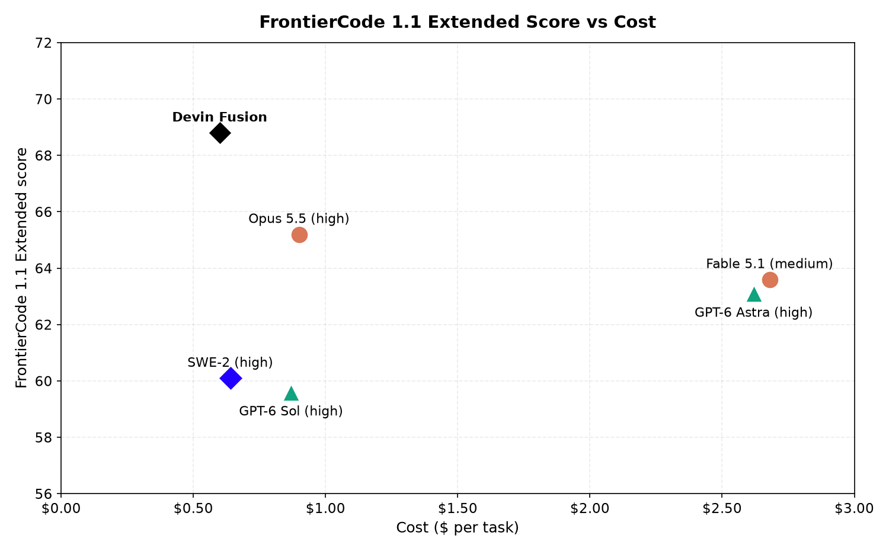
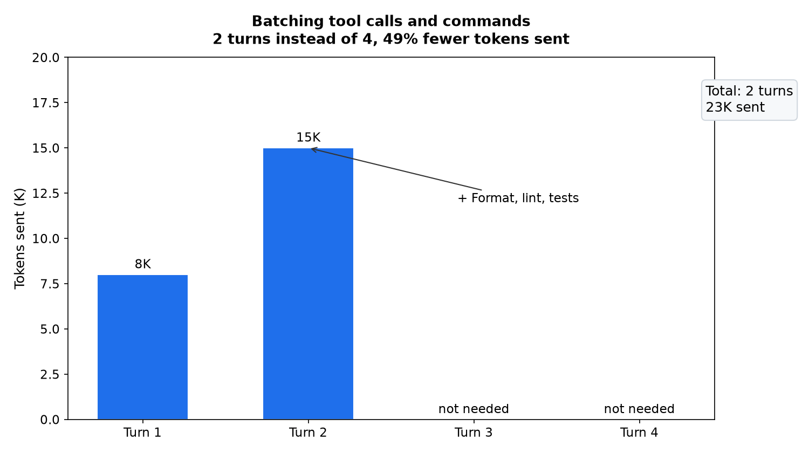
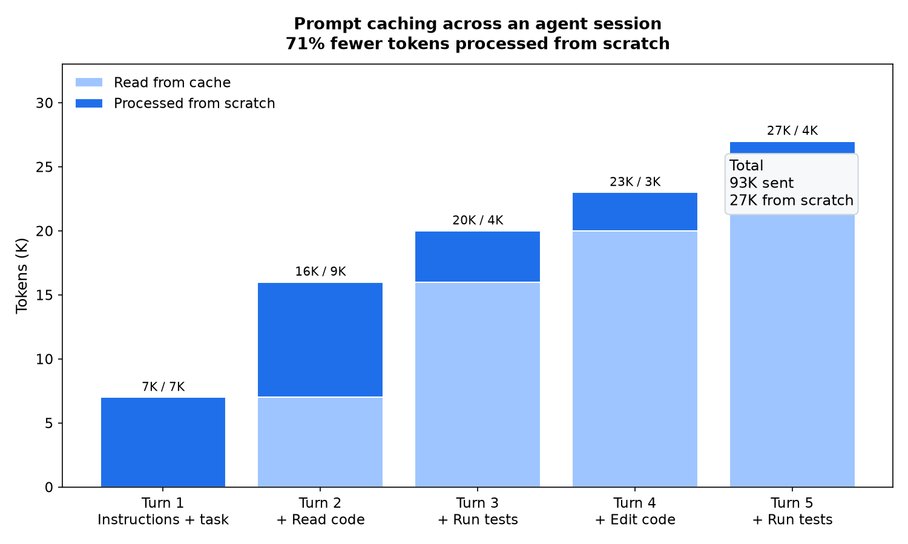

Devin现在便宜多了：Fusion和Normal模式降价30-40%，Ultra降15-20%，Devin Review最高降70%。降价来自两处：用上最新模型，包括自家的SWE-2，以及把Cloud harness调得更会用这些模型。下文拆解。
Cognition宣布Devin大幅降价：Fusion与Normal模式便宜30-40%，Ultra便宜15-20%，Devin Review最高便宜70%。
降价的来源是纳入最新模型，包括自家的SWE-2，再加上对Devin Cloud harness的工程优化，让这些模型的能力被用足。同样的用量能走得更远。
降价的同时，每个模式的智能保持或提升。Devin Fusion在FrontierCode 1.1上以68.8分领跑Extended，平均每任务0.60美元。

| 模式 | 降幅 |
|---|---|
| Fusion | 30-40% |
| Normal | 30-40% |
| Ultra | 15-20% |
| Devin Review | 最高70% |
Devin吃所有最新模型的红利。不同模型强项不同，新版本会改变给定成本下能做到的事。Opus 5.5与GPT-6 Sol智能更强且价格性能比好，GPT-6 Astra擅长计算机操作，GPT-6 Luna大幅拉低支撑任务的成本。加上自家的SWE-2和其他一众模型，Devin的每个环节都能选最合适的。
Fusion把这种灵活性用起来：能干的主模型配省钱的副手，智能与效率两头的进步都吃到。Devin Review能为看diff、找bug、分类变更各自选最合适的模型。Normal与Ultra同理，在规划、测试、调试、迁移等环节按强项选模型。
新模型越来越会把几个动作放在一起推理，而不是每个小操作走一轮。格式化代码、lint、跑测试这样一串活，模型可以在一次工具调用里全要了，再一起对结果推理。轮数少了，协调工作的token也少了，整个会话更便宜。
示意：4轮压成2轮，发送的token少49%。第1轮发8K，第2轮一次要走格式化、lint、测试，发15K，第3、4轮不需要了，总计2轮、发送23K。

Devin还打磨了把多个shell命令并进一次调用、独立工具调用并行跑。新模型每轮能规划更多工作：独立的步骤并行，需要顺序的步骤背靠背执行，命令之间不再回模型绕一圈。
LLM无状态。Devin这样的编码agent，每次请求都要带上模型决策需要的上下文：指令、相关代码、之前的动作。每轮都从头处理不断变长的历史，又慢又贵。提示缓存省掉重复工作：请求开头和之前的一致，共享前缀的计算结果直接复用，不用重新处理同样的输入。上下文还在，只是复用便宜得多、快得多。
示意会话：5轮请求，发送的token分别是7K、16K、20K、23K、27K，从头处理的只有7K、9K、4K、3K、4K。总计发送93K，从头处理27K，少71%。

把缓存用足靠harness的细活：共享前缀必须保持不变，缓存有有效期，缓存的计算还绑定模型与厂商。Devin的harness在这些约束里把上下文复用做到头，于是各厂商缓存降价都能吃到：Opus 5.5的缓存读比Opus 5便宜60%，GPT-6 Sol与Luna的缓存读价格相对5.6前代腰斩。任务带着长历史走很多轮，省的就多了。
更便宜的Devin今天已经在app.devin.ai上线，可以拿最有野心的活去试，用量走得更远。
参考：https://devin.ai/blog/more-efficient-devin